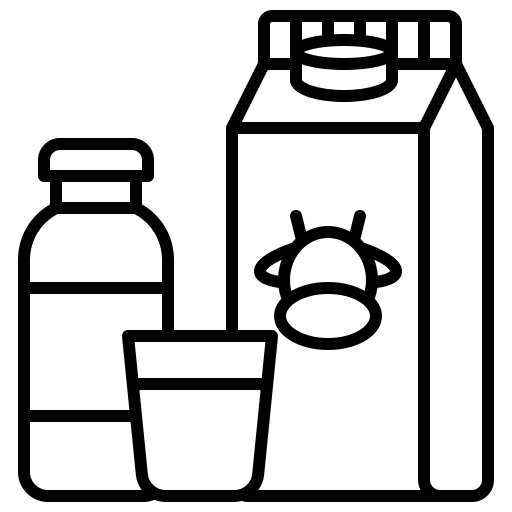
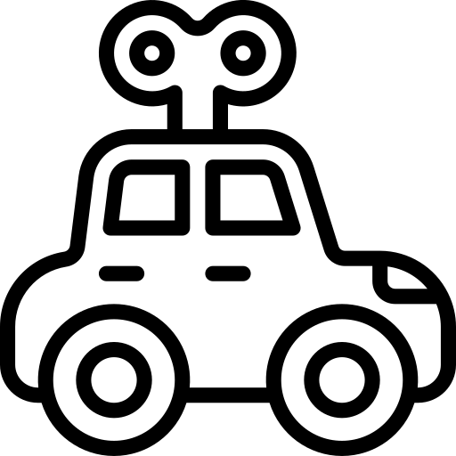
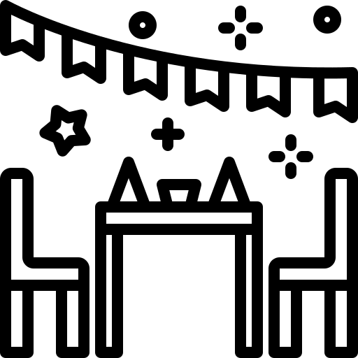

Adriana Guerra, fisioterapeuta e idealizadora do Projeto “Pequenos Guerreiros”, antes denominado “Príncipes e Princesas da Quimioterapia e Doenças Raras”, durante sua experiência, trabalhou na recuperação de crianças em tratamento contra o câncer. O projeto, por sua vez, aconteceu inesperadamente.
O trabalho teve início em outubro de 2014. Surgiu então a ideia de proporcionar às crianças em tratamento contra o câncer o sentimento de que poderiam, de fato, terem uma vida social, facilitando à criança enferma, de forma lúdica, a expressão e compreensão de suas necessidades, sejam elas físicas ou psicológicas.
Logo em 2016, surgiu uma oportunidade de apadrinhar uma criança com Doença Rara, onde o projeto passou a integrar crianças portadoras de doenças raras e acolher todos familiares.
E em 2019, enfim nasceu “Pequenos Guerreiros” (Associação Príncipes e Princesas da Quimioterapia e Doenças Raras), que apoia e desenvolve ações para o lazer, saúde e a defesa, elevação e manutenção da qualidade de vida do ser humano, atendendo meninas e meninos entre 0 a 16 anos de idade, com qualquer tipo de Neoplasia (Câncer), portadoras de Doenças Raras, crianças em Cuidados Paliativos e com deficiências.
O Projeto “Pequenos Guerreiros” promove, periodicamente, encontro entre as crianças com deficiências diversas e seus familiares, amigos que auxiliam na realização de sonhos. Além disso, o Projeto acolhe crianças e familiares em tratamento visando o envolvimento e humanização da sociedade que estão em contato direto ou indireto com a realidade diária dessas crianças, assim como o fortalecimento dos familiares que, muitas vezes, desconhecem as fases e procedimentos do tratamento.
Facilitar os processos de expressão de sentimentos, de comunicação e integração entre a criança com câncer ou portadoras de doenças raras com outras crianças fora do ambiente hospitalar, também a realização de sonhos e momentos de descontração são fundamentais. Possuímos o objetivo de levar aos nossos pequenos uma esperança, alegria, aprendizado e amizade para motivá-los a lutar pela vida e encarar de forma mais plena o tratamento.
Em Novembro de 2019 recebeu os Prêmios “Excelência Cidadã” e “Cidadão Benemérito” oferecidos pelo CDL, e em
Julho de 2020 recebeu “Moção de Aplauso” oferecido pelo presidente da Câmara Municipal de Uberlândia, ambos
pelos relevantes serviços prestados para a comunidade, e recebeu o Reconhecimento de Entidade de Utilidade
Pública Municipal pela lei nº 13.402 de 12/11/2020.
Confira no vídeo a seguir quem e o que somos:
NOSSAS AÇÕES
Arrecadação de leite e alimentos
Visitas à domicílio

Arrecadação de Brinquedos
Festas temáticas e aniversários
NOSSO MASCOTE
Olá! Sou o Quokkinha o mais novo amigo e mascote do Projeto Pequenos Guerreiros. Sou Guerreiro, selvagem, tolerante a presença humana, acolhedor por permitir certa aproximação. Os visitantes que vão até a ilha adoram tirar fotos com o mais novo amigo. Pelos dentes serem raros permitindo minha cara de sorridente, não é à toa que sou considerado o príncipe da selfies. Mas minhas definições não param por aí, se você reparar bem, até que parece, eu está sempre sorrindo, inclusive nos retratos, por isso sou conhecido mundialmente como o animal mais feliz da Terra.
Minhas características são os principais objetivos do projeto:
- Acolher
- Ser tolerante com as pessoas que chegam
- Tirar selfies (as crianças amam!)
- Selvagem = Guerreiras
NOSSO MVV
Missão
Acolhimento. Transformar vidas oferecendo melhor qualidade de vida, inspirar esperança através de sonhos realizados, proporcionando momentos de felicidade e tratamentos de saúde multidisciplinar por meio de parcerias e incentivo social.
Visão
Ser referência no desenvolvimento de atividades e ações fora do ambiente hospitalar e domiciliar, para crianças de 0 a 16 anos, de forma lúdica, promovendo o bem-estar e estar bem durante os tratamentos. Proporcionando esperança, força e alegria.
Valores
- Gente é tudo para a gente.
- Ética é inegociável.
- Integridade.
- Responsabilidade social.
- Nosso relacionamento com parceiros e colaboradores deve ser transparente e baseado na responsabilidade e confiança entre as partes.